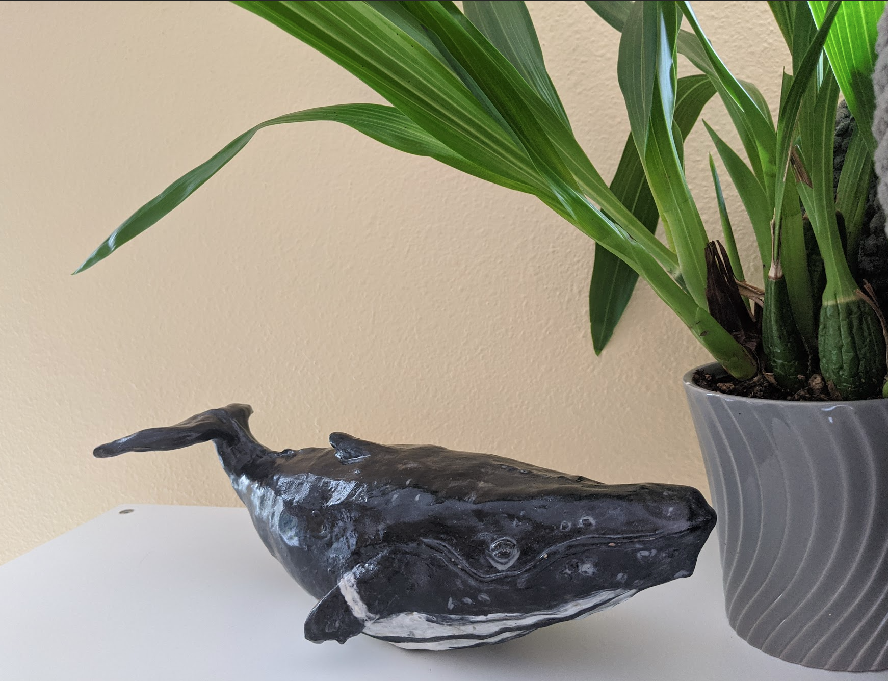

Go to Page Two
My Portfolio
List of Projects
Project One
Project Two
Project One
HTML Foundations Lesson One Assignment
Starter HTML skills project
GitHub Link
Project Two
Getting started with MarkDown
git-hub-learning-lab walkthrough
GitHub Link
